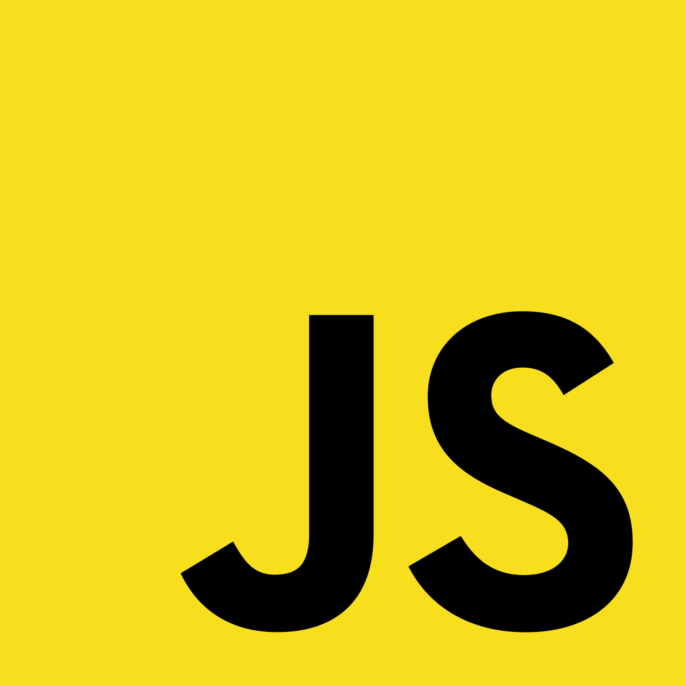
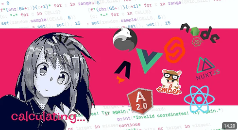

Apa itu Javascript?
Javascript adalah bahasa pemrograman yang paling banyak digunakan di dunia untuk pengembangan web. Bahkan, Javascript adalah satu-satunya bahasa pemrograman yang dapat dijalankan di browser pengguna.
"Jawa adalah kunci, sementara Javascript adalah kunci dalam website"
— RangS
Pada artikel ini, kita akan membahas tentang Javascript, mulai dari sejarahnya, hingga dominasinya dalam dunia website.
Javascript

Javascript adalah bahasa pemrograman tingkat tinggi dan sering digunakan dalam aplikasi berupa website. Maksud dari tingkat tinggi adalah kodenya yang sangat mudah dipahami, tetapi tidak memiliki kemampuan untuk memanipulasi hardware.
Javascript diciptakan oleh Brendan Eich dalam 10 hari. Ya, cuman 10 hari ia membuat Javascript di Netscape, lebih tepatnya bulan Mei tahun 1995. Dulu, Javascript bernama Mocha, lalu diganti menjadi LiveScript, dan akhirnya menjadi Javascript.
Javascript digunakan oleh developer web hanya untuk membuat aplikasi web yang interaktif. Karena pada awal-awal internet, jika website memerlukan interaksi, mereka cuman punya halaman htmlnya saja.
Fundamental Javascript
Mari belajar fundamental Javascript:
let a = 5; // Mendeklarasikan variabel a dengan nilai 5
const b = 10; // Mendeklarasikan variabel konstan/tak bisa diubah dengan nilai 10
// if statement
if (a < b) {
console.log("a lebih kecil dari b"); // Menampilkan pesan jika a lebih kecil dari b
} else {
console.log("a lebih besar atau sama dengan b"); // Menampilkan pesan jika a lebih besar atau sama dengan b
}
// fungsi
function tambah(x, y) {
return x + y; // Mengembalikan hasil penjumlahan x dan y
}
// loop
for (let i = 0; i < 5; i++) {
console.log(i); // Menampilkan nilai i dari 0 hingga 4
}
while (a < 10) {
a++; // Menambahkan nilai a hingga mencapai 10
}
// array
let array = [1, 2, 3, 4, 5]; // Mendeklarasikan array dengan 5 elemen
array.push(6); // Menambahkan elemen 6 ke dalam array
array.pop(); // Menghapus elemen terakhir dari array
Baca Juga: Terminal: Kawan Sejati Programmer
Setelah kita tahu fundamental javascript, sekarang waktunya ke hal terpenting yaitu DOM Manipulation.
DOM Manipulation
Kemampuan spesial dari Javascript adalah manipulasi DOM (Document Object Model). DOM adalah representasi hierarkis dari dokumen HTML atau XML. Dengan DOM, kita bisa mengubah konten, struktur, dan gaya dari elemen-elemen dalam halaman web. Bisa dibilang Javascript bisa memerintahkan HTML dan CSS.
Untuk memulai, coba buat halaman html sederhana, tapi yang paling penting, di bagian bawah tepat setelah tag body, kau tambahkan script untuk menyambungkan javascript.
// struktur folder
index.html
script.js
// index.html
<!DOCTYPE html>
<html lang="id">
<head>
<meta charset="UTF-8">
<meta name="viewport" content="width=device-width, initial-scale=1.0">
<title>Contoh DOM Manipulation</title>
</head>
<body>
<h1 id="judul">Halo Dunia!</h1>
<button id="ubahJudul">Ubah Judul</button>
<script src="script.js"></script>
</body>
</html>
// script.js
const tombol = document.getElementById("ubahJudul");
tombol.addEventListener("click", function() {
document.getElementById("judul").textContent = "Judul telah diubah!";
});
Intinya, kode diatas membuat sebuah tombol yang dapat mengubah teks judul saat diklik. Jadi, Javascript memiliki kemampuan untuk memanipulasi elemen-elemen pada halaman web, dan ini disupport secara native oleh browser.
Masuk ke pertanyaan awal, kenapa Javascript memiliki ekosistem yang sangat luas?
Ekosistem Javascript
Ekosistem Javascript sangat luas karena banyaknya library dan framework yang tersedia untuk membantu pengembangan aplikasi web. Aplikasi web modern memiliki fitur yang sangat banyak, karena itulah para pengembang membuat library dan framework untuk mempermudah pengembangan aplikasi web.
Library sendiri adalah kumpulan kode yang telah ditulis dan dapat digunakan kembali dalam pengembangan aplikasi. Sedangkan framework adalah struktur yang menyediakan kerangka kerja untuk membangun aplikasi.
Library pertama yang sangat populer adalah jQuery, yang membantu dalam manipulasi DOM dan penanganan event. Lalu pada 2013, React datang dan mengubah cara pandang developer mengenai UI atau user interface.
React JS
React JS adalah library Javascript yang dikembangkan oleh Facebook. React memungkinkan developer untuk membangun user interface yang interaktif dan efisien dengan menggunakan konsep komponen.
Apa maksud dari komponen? Maksud dari komponen adalah kode dipecah menjadi beberapa bagian kecil yang dapat digunakan kembali. Bagi pengguna laravel, mungkin sudah tak asing dengan baris:
@extends('layouts.app')Baris diatas adalah contoh dari komponen, dimana kita memanggil komponen layout yang telah dibuat sebelumnya. Begitu juga dengan React, kita bisa membuat komponen yang dapat digunakan kembali di berbagai bagian aplikasi.
Alasan lain dari banyaknya library dan framework Javascript adalah karena kebutuhan developer yang berbeda-beda.
Web Assembly
Kamu mungkin pernah membuka aplikasi seperti Canva, Figma, Photopea, Google Docs, Google Spreasheets, dan lain-lain. Apa kamu pikir Javascript bisa menangani semuanya?
Nah, kebanyakan aplikasi tersebut memerlukan performa yang lebih tinggi dari Javascript. Maka muncul Web Assembly yang memungkinkan menjalankan kode dengan performa hampir setara dengan bahasa pemrograman native.
Bahasa pemrograman native seperti C, C++, dan Rust yang diubah menjadi format Web Assembly.
Jika kamu pernah membuat game dengan Godot 4, kamu mungkin ingin game buatanmu bisa dijalankan di web browser seperti di website itch.io. Nah, mereka memerlukan Web Assembly agar kode bisa berinteraksi dengan Javascript.
Hanya saja, Web Assembly tidak bisa berdiri sendiri, ia tidak memiliki kemampuan untuk melakukan DOM Manipulation. Bisa dibilang Web Assembly adalah saudara bagi Javascript.
Kultur Javascript
Bayangkan kau menggunakan library buatan orang lain, lalu kau tidak suka karena kodenya aneh. Jadi kau membuat library sendiri dan diupload ke npm. Lalu orang lain pakai library buatanmu, dan mereka mengalami hal yang sama. Mereka tidak menyukai library buatanmu, jadi mereka membuatnya sendiri.
Apakah hal ini baik atau buruk? Aku pikir dua-duanya. Kenapa? Sisi baiknya adalah ekosistem yang lebih luas dan inovatif. Sisi buruknya adalah dependency hell.
package A -> package B -> package C versi 1.0.0Jika package C tidak ada, entah itu dihapus atau ditinggalkan oleh pengembang, maka package A dan B tidak dapat digunakan. Dan mungkin kau akan terus mengetik npm install di terminal dengan harapan selesai diperbaiki.
NPM
NPM atau node package manager adalah package manager untuk Javascript. NPM memungkinkan developer untuk mengelola dependensi dan library yang digunakan dalam proyek mereka. Dengan NPM, developer dapat dengan mudah menginstal, memperbarui, dan menghapus paket-paket yang dibutuhkan.
Selain itu, NPM juga menyediakan registry online yang berisi ribuan paket yang dapat digunakan oleh developer. Developer dapat mencari paket yang sesuai dengan kebutuhan mereka dan menginstalnya dengan mudah menggunakan perintah NPM di terminal.
Dengan NPM, developer dapat menghemat waktu dan usaha dalam mengelola dependensi proyek mereka, sehingga mereka dapat fokus pada pengembangan aplikasi dan fitur-fitur baru.
npm install nama-paketNode JS
"Kesalahan terbesar pengembang Javascript adalah mengeluarkan Javascript dari browser". Setidaknya itulah yang dikatakan orang-orang tentang Node JS.
Node JS digunakan untuk menjalankan Javascript di server, bukan hanya di browser. Jadi, Javascript bisa memanipulasi file sistem dan database.
Ini sebenarnya sesuai dengan ucapan guruku, yaitu "Javascript adalah bahasa pemrograman paling rakus". Gimana enggak, jika kamu bisa menggunakan Javascript, kamu bisa kerja diberbagai bidang, entah itu web development, mobile development, atau desktop development. Hanya saja, masalah lainnya adalah performa aplikasi.
Performance
Performa perlu dipertanyakan jika membuat aplikasi dengan javascript. Semenjak adanya Electron (Framework javascript untuk urusan desktop), aplikasi sekarang terasa semakin berat. VSCode saja memerlukan memori sekitar 400+ MB.
Membuka aplikasi dengan framework Javascript memerlukan perhatian khusus terhadap performa. Jika tidak, maka lama-kelamaan pengguna menyadari kalau membuka aplikasi itu seperti membuka aplikasi chrome versi mini.
Kesimpulan
Jadi, Javascript adalah bahasa pemrograman yang sangat populer dan memiliki ekosistem yang luas. Ekosistem yang luas terjadi karena setiap aplikasi memerlukan kebutuhan yang berbeda-beda. Hanya saja, ekosistem yang luas juga memiliki sisi buruknya, yaitu dependency hell. Tidak hanya itu, performa aplikasi Javascript juga perlu dipertanyakan. Kau bisa lihat video dari DiTeknoin untuk penjelasan berupa video mengenai javascript.
Link ke Video.
